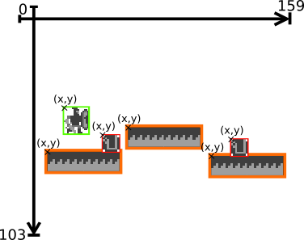

Unser Spielfeld ist ein karthesische koordinaten system mit 16 bit integern als x und y werte
es sind also alle positonen zwischen -min16bitInt und max16bit integer möglichen.
das koordinaten system besitzt außerdem eine gespiegelt y achse.
inerhalb diese systems gibt es dann noch den bildausschnitt der sich von 0 - 159 x und 0 - 104 y aufspannt.
warum das logische spielfeld soviel größer ist als benötigt erläutern wir später im punkt sitescroller.
"game":{
"gameSpeed": "int",
"gravity": "int",
"platWidth": "int",
"score": "int",
"lives": "int",
"gameState": "enum",
"player": "Player",
"platforms[3]": "Platform[]",
"powerUps[2]": "PowerUp[]"
}
Unser Spiel setzt sich aus mehreren Objekten zusammen.
Das erste Objekt ist das Spiel ansich. Es hat die Eigenschaften Spielgeschwindigkeit, Schwerkraft,
Spielzustand, maximale Plattengröße, Punktestand und leben.

Die Spielzustandsmachine besteht aus 3 Zuständen.
Einem run-Zustand indem sich das Spielgeschehen abspielt, einem stop-Zustand indem das Spiel angehalten ist der
Ausgelöst wird sobald man die Pause taste drückt,
und einem set-Zustand der sobald man stirbt sich darum kümmert das das Spiel neu gestarted wird oder aber beendet
sollte man alle seine Leben verloren haben.
Das nächste Object das wir für unser Spiel benötigen ist der Spieler selbst. Er ist in Rechteck und hat damit
logischerweise die eigneschaften x,y,höhe und breite. Damit wir in beim Zeichenen
löschen können merken wir uns auserdem seine letzte Y-Position, diese wird auserdem später bei der Kollisonsabfrage
noch hilfreich.
Weitere Eigenschaften des Spielers sind seine Sprunghöhe und sein Dashweite. Zudem hat er einen eindimensonalen
Vektor für seine Bewegung in Y. Der Spieler hat auserdem noch eine Form die festlegt
festlegt was für ein Character er gerade ist.
Um festzustellen welche Physikalischen Eigenschaften auf ihn wirken gibt es einen Spielerzustand.

Die Spielerzustandsmachine besteht aus 4 zuständen.
- falling: Befinden wir uns im Zustand falling so wirkt auf uns der BewegungsVector movY des Spielers auf uns. Auf diesen wird jedes Frame die schwerkraft dazuaddiert.
- standing: Im Zustand standing wirkt keine schwerkraft auf uns. Sobald wir aber den Kontakt zum Boden verlieren gehen wir wieder in den Zustand falling über
Um platz im Code zu sparen sind sowohl das Spiel als auch der Spieler keinen eigenen Klassen im Code sondern
ihre Attribute sind als globale Variablen deklariert.
Ein Sidescroller scroller ist ein Spiel in einer 2D ansicht bei dem man sich nur nach links und rechts bewegen kann.
DragonQuest ist ein besonderer Sidescroller da sich der Spieler kontinuierlich nach rechts bewegt.
Bewwegung rect 1 oder rect 2 egal
konstelölation wiuchtig
es gibt eine logische und eine Visuelle ansicht
offset merken. oder klüger offset = (playerpos x + 5) *1-1
Problem: der Integer des spielers für die x positon läuft über
lösung wir fragen die x positon jedes mal ab nach dem erhöhen und wenn wir in die nähe des Max Value kommen setzten wir ihn auf null.
offset auch zurück
in unserer implementation benutzen wir die reset schleife um gleichzeit das speil schwieriger zu machen. heißt geschwindigkeit erhöhen und platformgröße reduzieren.
Festlegen wie weit die neue platform von der letzten platform weg ist.
formel.
bestimmung der minimalen sprungweite:
(jumpheight * 2 +1) * gamespeed.
bestimmung der maximalen sprungweite:
minsprung * 2.
random zwischen diesen beiden werten.
neues Y zwischen 4 23
wegen der leben und score anzeigen un der spielhöhe des Spielers.
neue länge ist ein wert zwischen 2 und der maximalen platten größe * 15 da unser sprite für die platform 15 px lang ist.
Es gibt ein 15% chance das ein Powerup auf einer neuen platform entsteht.
die positon auf der platform ist ein wert zufällig zwischen ende und angfang der platform.
der y wert ist immer so das powerup auf der platform liegt.
switch acse für chancen auf powerups.
eine Grundlöegende Kollisionsabfrage zsicehen zwei rechtecken.
wir schauen ob die beiden äußerden kanten so ausernander ligen das es eine kollison geben könnte
dann betrachetn wir die innenen kannten ob sie inneinenader liegen.
das gleiche mit den y koordinaten
erweiterung der abfrage um die richtung festzustellen.
war die unterkante im frame davor über der platform so ist ees eine collision von oben.
war die oberkante des speilers im frame davor unter der platform so war es eine collsion von unten.
ist beides nicht der fall so war es eine kollison von der seite. die seite müssen wir nicht unterscheiden da wir aufgrund unserer scroll mechanik nur von links kollidirene können.
ertse collison.
die abfrage ob wir noch boden unten den Füßen haben.
relativ simple wir fragen ob der pixel unter dem spieler mit einer platform kollidiert ist dies nicht mehr der fall so gehen wir über in den Zustand fallen.
zweite Koliisonsabfrage wirkjsam in fallend springend
kollideren wir mit einer platform von oben so setllen wir den spieler auf die platform.
kollideren wir mir einer platform von unten so wird der bewegungsvektor des spielers auf 0 gesetz und wir beleiben im zustand fallend.
gibts es eine Kollsion von der seite so stribt der spieler und die death routine wird aufgerufen.
kollison mit powerups.
die kollison mit powerups ist eine einfache rechtecks kollison mit dem spieler. sobald das powerup kollidert wird der type auf none gestzt damit nicht mehremals der
selbe effekt auftritt.
Wir möchten Doppelsprünge bzw Dreifachsprunge
und Dashes also Schwerelosigkeit des Spielers und gleichzeitige Beschleunigung.
erste Aktion ist springen.
Dazu fügen wir einen Jumocounter hinzu.
drücken wir den Knopf für jump so wird der Spieler in den Zustand "springend" versetzt. und zum Bewegungsvektor wird die Sprunghöhe dazu addiert.
dananach wird der Jumocounter reduziert.
der Jumocounter wird jedes mal im Zustand "standing" zurückgesetzt. Auf den Wert den die jeweilige Form vorgibt.
fürs dachen benötigen wir ebensfalls einen Zähler. und auserdem einen zweiten zähler der mitzähl wie viele frames wir schon dashen.
wird der knopf dashen betätigt so wird wie beim springen der spieler in den zustand dashen versetzt
außderdem wird der zähler für die frames auf die von der form vorgegebene größe gesetzt.
außerdem wird der counter reduziert.
im zustand dasching wird die normale spielgeschwqindigkeit auf verdoppelt.
auserdem wird die süpielgeschwqindigkeit von der dashframecounter abgezogen.
somit haben wir gleich lange dashes egal wir schnell das speil gerade ist.
befinden wir uns im zustand dashing und die dashFramecounter ist kleiner oder gleich null so gehen wir in den zustand falling über.
testet man das ganze so gibt es nun folgendes problem.
springt man und dasht in der mitte des sprungs so bewegen wir uns torzdem noch nach oben. und dashen wir und springen in der mitte des dashes so sind wir danach wieder dashend.
um das zu verhindern muss man in der jump routine noch den dahsframcounter auf null setzten und in der dashroutine den bewgungsvektor des spielres auf null.